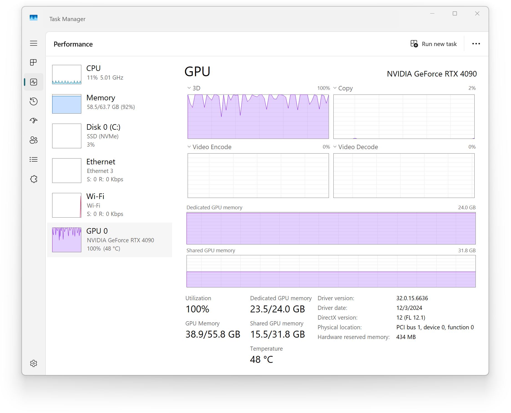
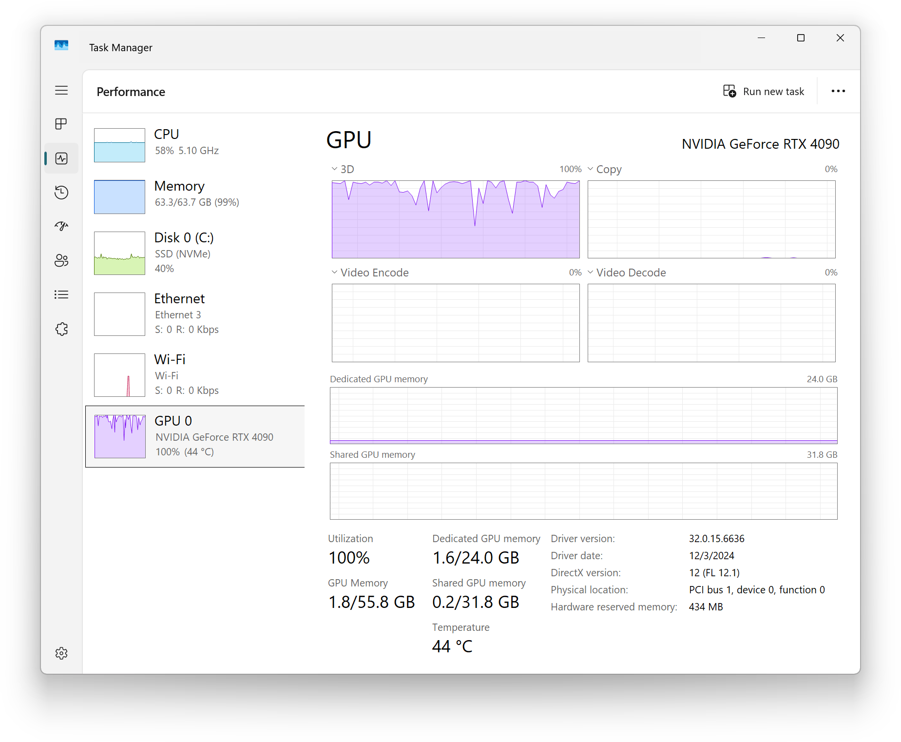

Memory-efficient training¶
This article discusses solutions for training topic models on datasets larger than the available GPU VRAM or system RAM.
Training data larger than VRAM but smaller than RAM¶
This scenario is manageable. Let’s see an example. We simulate a 100k x 100k dataset, requiring 37GB of memory. In this test, the dataset is larger than the 24GB VRAM but smaller than the 64GB system RAM.
import tinytopics as tt
tt.set_random_seed(42)
n, m, k = 100_000, 100_000, 20
X, true_L, true_F = tt.generate_synthetic_data(n, m, k, avg_doc_length=256 * 256)
size_gb = X.nbytes / (1024**3)
print(f"Memory size of X: {size_gb:.2f} GB")
model, losses = tt.fit_model(X, k=k, num_epochs=200)
tt.plot_loss(losses, output_file="loss.png")

Each epoch takes around 6 seconds. The peak GPU VRAM usage is 23.5GB, and the peak RAM usage is around 60GB.
Although the full dataset requires ~40 GB of RAM, the training process
only moves one small batch (controlled by batch_size in fit_model())
onto the GPU at a time. The model parameters and a batch of data fit
within the 24GB VRAM, allowing the training to proceed.
Stream training data from disk¶
A more general solution in PyTorch is to use map-style and iterable-style datasets to stream data from disk on-demand, without loading the entire tensor into system memory.
You can use the NumpyDiskDataset or TorchDiskDataset classes to load
.npy or .pt datasets from disk as training data, supported by both
fit_model() and fit_model_distributed(). Here is an example:
import numpy as np
import tinytopics as tt
tt.set_random_seed(42)
n, m, k = 100_000, 100_000, 20
X, true_L, true_F = tt.generate_synthetic_data(n, m, k, avg_doc_length=256 * 256)
size_gb = X.nbytes / (1024**3)
print(f"Memory size of X: {size_gb:.2f} GB")
data_path = "X.npy"
np.save(data_path, X.cpu().numpy())
del X, true_L, true_F
dataset = tt.NumpyDiskDataset(data_path)
model, losses = tt.fit_model(dataset, k=k, num_epochs=100)
tt.plot_loss(losses, output_file="loss.png")
Training data larger than RAM¶
Let’s demonstrate using a dataset larger than RAM. We will sample the
rows of the previous 100k x 100k dataset to construct a 500k x 100k
dataset, and save it into a 186GB .npy file using NumPy memory-mapped
mode.
import numpy as np
from tqdm.auto import tqdm
import tinytopics as tt
tt.set_random_seed(42)
# Generate initial data
n, m, k = 100_000, 100_000, 20
X, true_L, true_F = tt.generate_synthetic_data(n, m, k, avg_doc_length=256 * 256)
# Save initial data
init_path = "X.npy"
np.save(init_path, X.cpu().numpy())
size_gb = X.nbytes / (1024**3)
print(f"Memory size of X: {size_gb:.2f} GB")
# Free memory
del X, true_L, true_F
# Create larger dataset by sampling with replacement
n_large = 500_000
large_path = "X_large.npy"
# Create empty memory-mapped file
shape = (n_large, m)
large_size_gb = (shape[0] * shape[1] * 4) / (1024**3) # 4 bytes per float32
print(f"Expected size: {large_size_gb:.2f} GB")
# Initialize empty memory-mapped numpy array
large_array = np.lib.format.open_memmap(
large_path,
mode="w+",
dtype=np.float32,
shape=shape,
)
# Read and write in chunks to limit memory usage
chunk_size = 10_000
n_chunks = n_large // chunk_size
source_data = np.load(init_path, mmap_mode="r")
for i in tqdm(range(n_chunks), desc="Generating chunks"):
start_idx = i * chunk_size
end_idx = start_idx + chunk_size
indices = np.random.randint(0, n, size=chunk_size)
large_array[start_idx:end_idx] = source_data[indices]
# Flush changes to disk
large_array.flush()
# Train using the large dataset
dataset = tt.NumpyDiskDataset(large_path)
model, losses = tt.fit_model(dataset, k=k, num_epochs=20)
tt.plot_loss(losses, output_file="loss.png")

Each epoch now takes 5 to 6 minutes due to heavy data movement between disk, RAM, and VRAM. CPU and RAM usage are both maxed out. The peak VRAM usage is only 1.6GB, and the peak RAM usage is near 64GB.